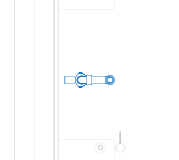
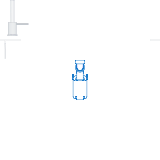
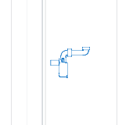

待用户复核。场景 SVG 由 Bonsai Create Drawing 生成。蓝线来自官方原生 DWG：固定接头刚性移位，仅调整直管长度；灰线为保留的项目上下文。柜体遮挡对象通过 Drawing 过滤器排除，目标高模 Body 不重复出图。
旧版错误包括仅取高模外轮廓，以及对整个官方图直接裁切而删掉上部弯头。此次保留完整接头、套管、连接螺母，并补回旧提取器遗漏的官方 G.dwg 三个进水口同心圆。可调余量保存在审计中，场景不显示为已安装线。


